In diesem Bereich können sogenannte CRM-Regeln zum jeweiligen Schritt hinterlegt werden. Diese CRM-Regeln können vor bzw. auch nach dem Ausführen des CRM-Schritts Anwendung finden und somit den weiteren "Verlauf" des Falles beeinflussen. Die Regeln werden jedoch grundsätzlich erst nach dem Ausführen von eventuell vorhandenen CRM Scripts vorgenommen. Regeln kommen nur bei der Neuanlage von Schritten zur Anwendung.
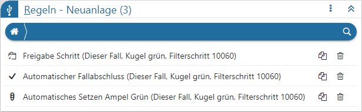
Ø Kopfzeile
In der Kopfzeile des Bereichs wird neben der Bezeichnung "Regeln" auch die Anzahl der aktuell hinterlegten CRM Regeln angezeigt.
Achtung
Handelt es sich um einen Workflow-, End- oder Nebenschritt, welcher von einem Musterschritt abgeleitet wurde, so wird diese Verbindung ebenfalls in der Kopfzeile dargestellt.
Ø Menü
Durch Anwahl des Menüs werden, abhängig vom aktuell gewählten Workflow-Objekt, weitere Funktionen zur Verfügung gestellt:
ü Entsperren / Sperren
Handelt es
sich um einen Workflow-, End- oder Nebenschritt welcher von einem Musterschritt
abgeleitet wurde, so kann hier definiert werden, ob die CRM Regeln vom
Musterschritt kommen oder editierbar sein sollen.
ü Maximieren / Minimieren
Bei
einem Maximieren werden die Regeln als einziger Bereich in der Definition
angezeigt, bzw. bei einem Minimieren wieder alle Bereiche in der Definition.
Hinweis
Über die Tastenkombination ALT + H kann der Bereich direkt maximiert bzw. minimiert werden.
ü Neu
Mit Hilfe dieser Auswahl
können neue CRM-Regeln hinzugefügt werden. Hierfür öffnet sich zunächst das
Fenster "Regel hinzufügen", in welchem alle Regel-Typen aufgeführt
werden.
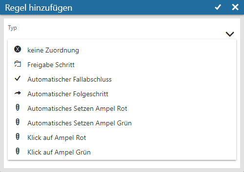
Hinweis
Wurde der Bereich "Regeln" maximiert, so können neue Gruppen über die Tastenkombination ALT + N direkt hinzugeführt werden.
Ø Tabelle
In der Tabelle werden alle hinterlegten CRM-Regeln dargestellt. Wenn eine Regel bearbeitet werden soll, so muss diese nur per Mausklick ausgewählt werden.
Hinweis
Neue Regeln werden über das Menü der Kopfleiste (Funktion "Neu") hinzugefügt.
Ø Regel kopieren
Mit Hilfe dieses Buttons kann die CRM-Regel kopiert werden.
Ø Regel löschen
Durch Anwahl dieses Tabellenbuttons wird die CRM-Regel entfernt.
Fenster "Regel bearbeiten"
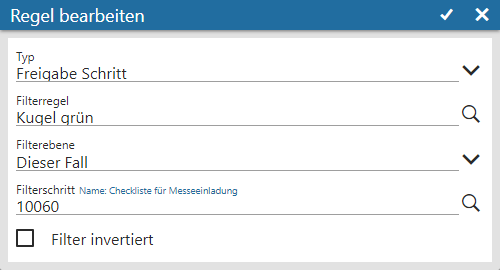
In diesem Fenster wird die Regel definiert bzw. überarbeitet. Hierbei hängen die Felder "Filterebene", "Filterregel", "Filterschritt" und "Filter invertiert" immer zusammen und bilden die zu erfüllende "Bedingung" der CRM Regel.
Ø Typ
Bei den CRM Regeln stehen folgende Regelwerke zur Verfügung:
ü 0 - keine Zuordnung
Über
diese Funktion kann eine angelegte CRM-Regel deaktiviert werden. Dieses
Regelwerk wird nicht ausgeführt.
ü 1 - Freigabe Schritt
Erst wenn
die Bedingung der CRM-Regel erfüllt wurde kann ein bestimmter Folgeschritt vom
Anwender ausgeführt werden bzw. steht dem Anwender zur Auswahl.
ü 2 - automatischer
Fallabschluss
Über diese Regel kann ein CRM-Fall automatisch abgeschlossen
werden, auch wenn es sich nicht um den Endschritt handelt.
Hinweis
Das Kennzeichen für einen abgeschlossenen CRM-Fall kann u.a. im LIST-Assistenten (bei den CRM-Listen) abgefragt werden. Zusätzlich kann in den INFO-Modulen (Bereich "CRM") aufgrund dieses Kennzeichens selektiert werden.
ü 3 - automatischer
Folgeschritt
Mit Hilfe dieser CRM-Regeln wird ein bestimmter CRM-Schritt
ausgeführt, wenn die Bedingung der Regel erfüllt wurde.
Beispiel
Innerhalb des CRM-Prozesses gibt es zwei Wege der Abarbeitung ("kurze Prüfung" und "lange Prüfung"), wobei die "kurze Prüfung" für bereits überprüft Kunden verwendet werden soll.
Neben der Möglichkeit der Sperrung (siehe CRM Regel "1 - Freigabe Schritt!) könnte mit Hilfe der Regel "3 - automatischer Folgeschritt" automatisch der erste Schritt der "kurzen" oder "langen" Prüfung ausgeführt werden. Die Überprüfung der Regel könnte dabei z.B. über eine Eigenschaft des Personenkontenstamms erfolgen.
ü 4 - Automatisches Setzen Ampel
rot
Ist die Bedingung der CRM-Regel erfüllt worden, so wird die Folgeaktion
"11 - Setze Status auf Rot" ausgeführt, d.h. der Status des Schritts auf Grün
gesetzt.
ü 5 - Automatisches Setzen Ampel
grün
Ist die Bedingung der CRM-Regel erfüllt worden , so wird die Folgeaktion
"13 - Setze Status auf Grün" ausgeführt, d.h. der Status des Schritts auf Grün
gesetzt.
ü 6 - Klick Ampel auf Rot
Im
Gegensatz zur Regel "4 - Automatisches Setzen Ampel rot" wird bei dieser Regel
der Status der CRM-Schritts nicht direkt umgesetzt, sondern es wird beim Klick
auf die Kugel in der Fallansicht geprüft, ob die Bedingung zum Setzen des Status
"Rot" erfüllt ist.
Sollte die Ampel-Regel nicht erfüllt sein, so erscheint
eine Hinweis, dass die Bedingung hierfür nicht erfüllt wurde.
ü 7 - Klick Ampel auf Grün
Im
Gegensatz zur Regel "5 - Automatisches Setzen Ampel grün" wird bei dieser Regel
der Status der CRM-Schritts nicht direkt umgesetzt, sondern es wird beim Klick
auf die Kugel in der Fallansicht geprüft, ob die Bedingung zum Setzen des Status
"Grün" erfüllt ist.
Sollte die Ampel-Regel nicht erfüllt sein, so erscheint
eine Hinweis, dass die Bedingung hierfür nicht erfüllt wurde.
Achtung
Alle gleichlautenden Regeln werden mit einer UND-Verknüpfungen versehen!
Ø Filterregel
Eine Regel muss eine zu erfüllende Bedingung haben. Was die Elemente dieser Bedingung sind, muss mit Hilfe eines Filters angegeben werden, wobei ein temporärer Filter nicht verwendet werden darf!
In dem Filter selbst kann neben den CRM-Tabellen auf diverse Stammdatentabellen wie z.B. Artikelstamm, Arbeitnehmer, Personenkontenstamm, Projekte etc. zu gegriffen werden.
Beispiel
Im Kundendienst sollen nur jene Kunden eine Rechnung erhalten, welche keinen Wartungsvertrag abgeschlossen haben. Dieses ist über eine Eigenschaft im Personenkontenstamm ersichtlich.
Der Workflow soll dementsprechend dynamisch bei dem Schritt "Besuchsbereich Kundendienst stoppen. Dieses wird über eine Regel bewerkstelligt.
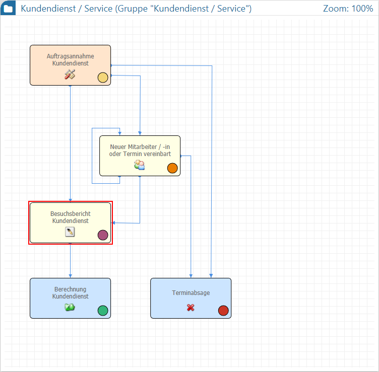
In der Regel wird die Bedingung (Wartungsvertrag) über einen Filter vorgegeben.
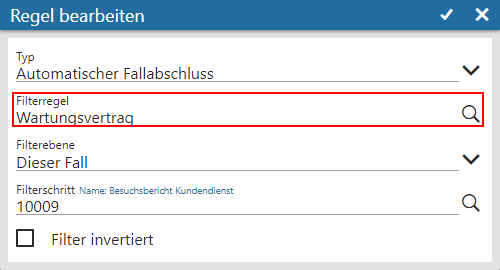
Im Filter wird dann auf die Eigenschaft des Personenkontos abgefragt.
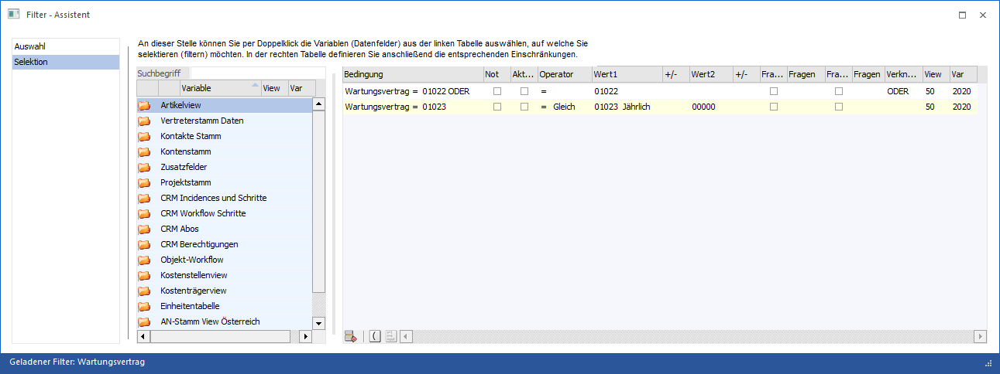
Ø Filterebene
Über die Filterebene erfolgt die Definition im Kontext welches CRM-Falls die Regel geprüft werden soll, wobei hierüber "nur" der Filterzugriff beeinflusst wurde. Ausgangspunkt ist dabei immer der "aktuelle" CRM-Fall. Folgende Möglichkeiten für die Filterebene stehen zur Verfügung.
ü 0 - Dieser Fall
Es wird auf die
Daten des aktuellen Falls zugegriffen. Über das Feld "Filterschritt" kann
zusätzlich angegeben werden, von welchem Schritt die zu überprüfenden Daten
stammen sollen.
ü 1 - Mutterfall
Wurde der
CRM-Fall mit Hilfe der Folgeaktion "2 - Splitte Fall" erzeugt, so wird auf die
Daten des Ursprungsfalls zugegriffen.
ü 2 - Tochterfall
Es wird auf die
Daten aller gesplitteten Fälle, ausgehend vom aktuellen CRM-Fall,
zugegriffen.
ü 3 - Tochterfall aktueller
Schritt
Es werden die Daten des zuletzt gesplittete Falls, ausgehend vom
aktuellen CRM-Fall, verwendet.
ü 4 - Tochterfall von
Schritt
Hierüber kann ein bestimmt gesplitteter Fall / Schritt geprüft
werden. Die Eingabe eines Schritts im Feld "Filterschritt" ist hierfür
Voraussetzung.
ü 5 - Alle beteiligten Fälle
In
dem Fall werden alle Fälle genommen, bedeutet der Ursprungsfall (Mutterfall)
sowie alle gesplitteten Fälle (Tochterfall).
Beispiel
Es gibt den CRM-Fall 1000, in welchem man sich auch gerade befindet. Dieser ist entstanden durch eine Splittung aus dem Fall 999. Zusätzlich wurde aus dem Fall 1000 die Fälle 1001 und 1002 erzeugt (ebenfalls per Folgeaktion "2 - Splitte Fall").
ü 0 - Dieser Fall => CRM-Fall 1000
ü 1 - Mutterfall => CRM-Fall 999
ü 2 - Tochterfall => CRM-Fall 1001 und 1002
ü 3 - Tochterfall aktueller Schritt => CRM-Fall 1002
ü 4 - Tochterfall von Schritt => muss über "Filterschritt" angegeben werden
ü 5 - Alle beteiligten Fälle => CRM-Fälle 1000, 999, 1001, 1002
Achtung
Wird ohne "Filterschritt" gearbeitet, so wird die Filterregel auf jeden einzelnen Schritt angewendet. Sobald die Filterelemente in einem der gefunden Schritte zutreffen gilt die Bedingung als erfüllt und die CRM Regel findet Anwendung.
Ø Filterschritt
Über den Filterschritt kann ein bestimmter CRM-Schritt selektiert werden, d.h. der Filter wirkt auf jene Daten, welche mit dem Schritt erzeugt wurden.
Ø Filter invertiert
Durch das Aktivieren dieser Option wird die Bedingung des Filters umgedreht. D.h. wenn laut Filter die Kontonummer "10001" lauten muss, so darf sie bei einem Invertieren gerade nicht "10001" lauten.
Beispiel
Ein Beispiel hierfür wäre, dass ein Filter nicht mehrfach angelegt werden muss in dem z.B. ein Status abgefragt wird. Normalerweise würde ein Filter mit der Bedingung "ist gleich" und einmal mit dem Operator "ist ungleich" angelegt werden. Das wäre in dem Fall über diese Option mit einem Filter möglich, wo die Logik entsprechend geprüft wird.
Ø Automatischer Folgeschritt
Wurde der Typ "3 - automatischer Folgeschritt" ausgewählt, so steht dieses Feld zur Verfügung. Hierüber kann angegeben werden, welcher CRM-Schritt geschrieben werden soll.
Achtung
Wird eine Fortführung des CRM-Falls gewünscht, so sollten nur Folgeschritte des aktuellen CRM-Prozesses ausgewählt werden! Die Hinterlegung eines Startschritts bewirkt die Anlage eines Falls.
Beispiel 1 - Workflow Vertragsabschluss (Easy CRM / Status auf Grün setzen /Fallabschluss / Freigabe Schritt)
Beim Geschäftsprozess für den Vertragsabschluss gibt es zwei Folgeschritte (Garantiekarte erhalten | Vertrag erhalten). Nach den beiden Folgeschritten (Garantiekarte erhalten | Vertrag erhalten) kommt ein dritter Schritt (Lizenz ausstellen). Der Startschritt (Vertragsabschluss) und die zwei Folgeschritte (Garantiekarte erhalten | Vertrag erhalten) sind "easy CRM"-Schritte.
Beim Ausführen des Startschritts wird der Status auf grün gesetzt, während bei den beiden Folgeschritten der Status auf Rot gesetzt wird. Der dritte Folgeschritt (Lizenz ausstellen) darf erst ausgeführt werden, wenn die anderen beiden Folgeschritte auf Status grün gesetzt worden sind.
Vorlage Vertragsabschluss
ü Kundenkonto
ü Kontakt (Ansprechpartner)
ü Vertragsbeginn (Kalender Start-Datum)
ü Vertragsende (Kalender End-Datum)
ü Langbeschreibung intern
Vorlage für die anderen Folgeschritte
ü Langbeschreibung intern
Lösung
Der Workflow wird angelegt und die zuvor angelegten Vorlagen entsprechend hinterlegt.
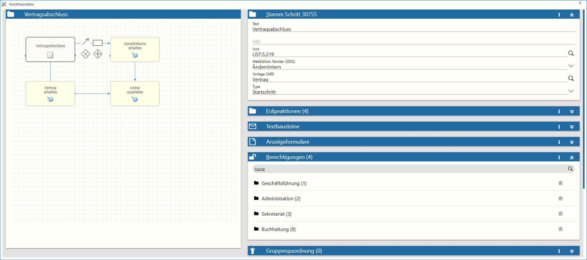
Bei den Folgeaktionen wird das Fall weiterleiten an den aktuellen Benutzer gesetzt und die Berechtigungen für die Benutzergruppen Geschäftsführung und Administration. Beim Startschritt wird der Status mit auf grün gesetzt.
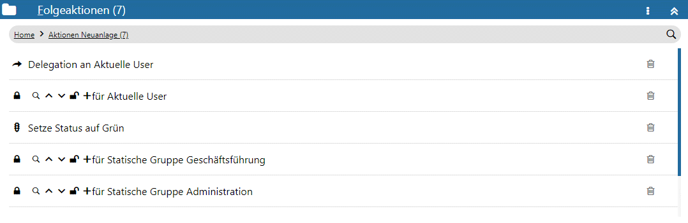
Im Bereich "Parameter" wird die Option "Easy CRM" aktiviert.
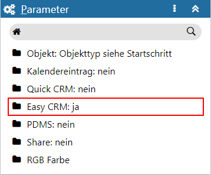
Beim Folgeschritt "Garantiekarte" die Vorlage hinterlegen.
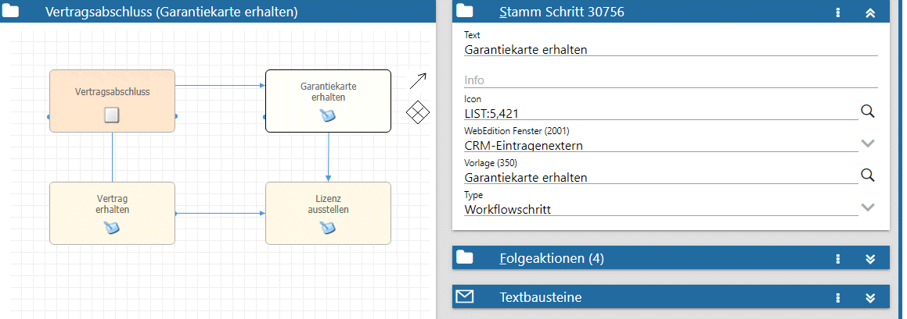
Bei dem Folgeschritt wird der Status auf "rot" gesetzt in der Folgeaktion.
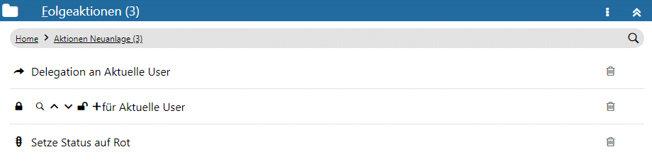
Im Bereich "Parameter" wird die Option "Easy CRM" aktiviert.
Folgeschritt "Vertrag erhalten" wird angelegt und ist identisch wie der Folgeschritt "Garantiekarte".
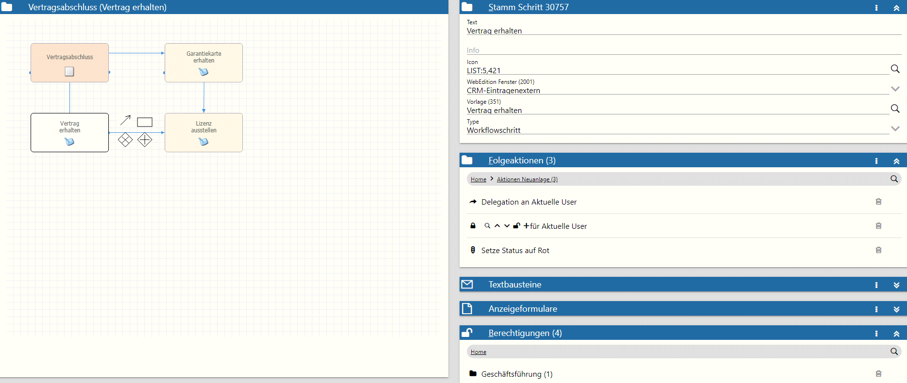
Im Bereich "Parameter" wird die Option "Easy CRM" aktiviert.
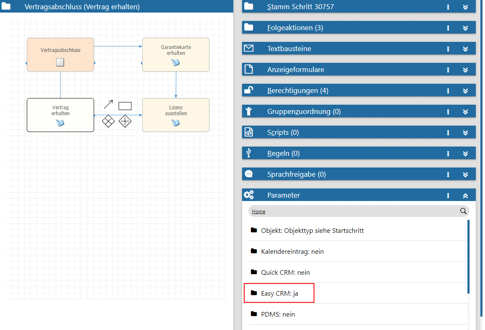
Der Folgeschritt "Lizenz ausstellen" wird im Anschluss den beiden vorherigen Folgeschritten hinterlegt.
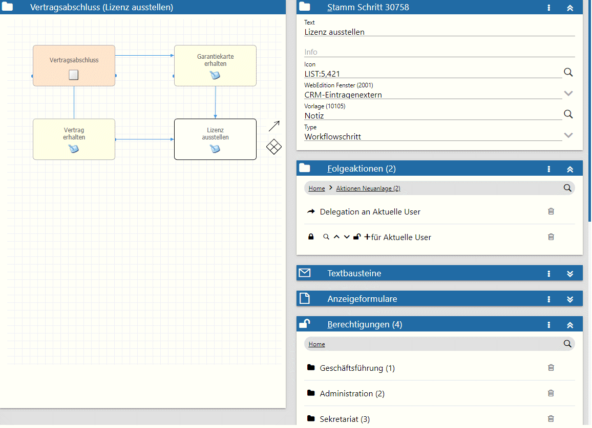
Bei dem Folgeschritt "Lizenz ausstellen" wird die CRM Regel hinterlegt.
ü 1 - Freigabe Schritt
ü Anwenden auf diesen Fall / Filterebene
ü Filter anlegen wo "Status Rot" geprüft wird
ü Filter invertiert wird aktiviert
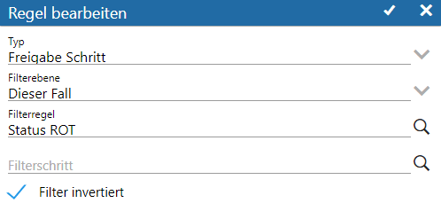
ü Weitere Regel hinterlegen, dass der Fall automatisch abgeschlossen wird
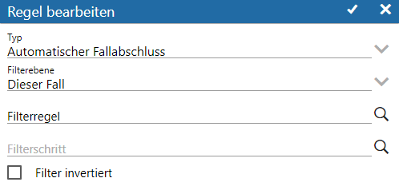
Der Filter "Status rot" wird wie folgt aufgebaut.
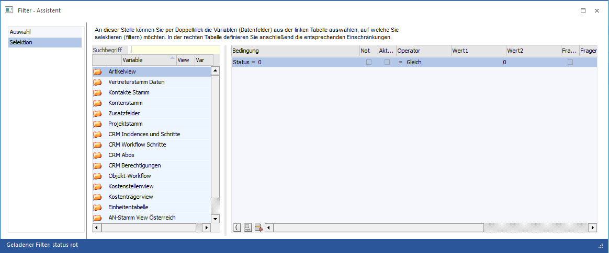
Einen Fall erfassen mit dem Startpunkt, nach dem Erfassen wird die Fallansicht geöffnet.
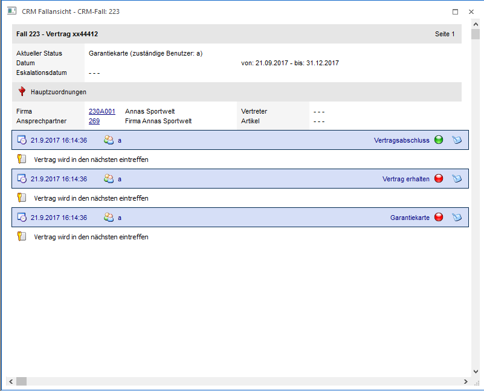
Per Klick auf die roten Kugeln kann der Status bei den beiden Folgeschritten vorgenommen werden.
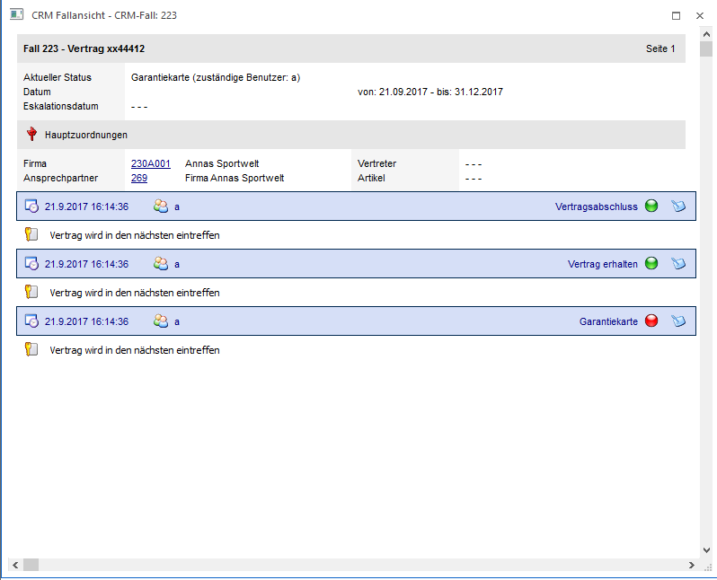
Wenn jetzt alle Schritte auf grün gesetzt sind, steht der Folgeschritt "Lizenz ausstellen" zur Verfügung.
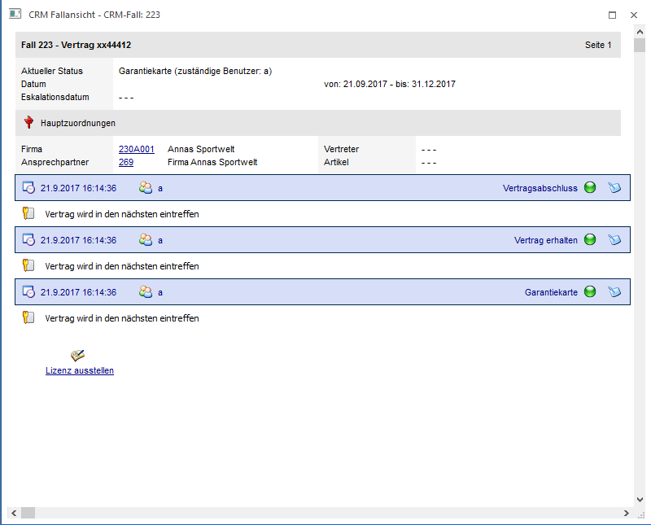
Beispiel 2 - Workflow Reklamation (Folgeschritt / Fallabschluss)
Bei der Erfassung eines Reklamationsstartpunkts wird über eine Eigenschaft entschieden, ob es sich um eine Garantie handelt oder nicht. Dies soll über eine Eigenschaft (ja/nein) erfolgen. Handelt es sich um einen Garantiefall wo die Eigenschaft auf "ja" gesetzt wird, soll der Reklamationsworkflow geschlossen werden und automatisch ein neuer Workflow "Garantie" begonnen werden. Der Workflow "Garantie" hat die folgenden zwei Folgeschritte
ü Nachfragen wo die Ware bleibt
ü Ware zurückbekommen
Bei "Ware zurückbekommen", soll der Fall den Status abgeschlossen erhalten. Der Startpunkt des Workflows kann nur über die CRM-Regel gestartet werden.
Die Eigenschaft "Garantie" wird bei der Falleröffnung mit "Nein" erfasst. Somit hat der Workflow zwei Folgeschritte "Reparatur Ja" und "Reparatur Nein". Danach folgt nur noch ein Schritt "Ware zurück an Kunden". Wird dieser Schritt vorgenommen, ist der Fall angeschlossen.
Bei der Falleröffnung werden folgende Felder benötigt:
ü Kunde
ü Ansprechpartner
ü Artikel
ü Eigenschaft (Garantie)
ü Kurzbeschreibung
ü Langbeschreibung intern
Für alle weiteren Folgeschritte wird eine Vorlage mit der "Langebeschreibung intern" verwendet.
Beim Startpunkt "Garantie" enthält die Vorlage folgende Felder:
ü Kundenkonto
ü Ansprechpartner
ü Artikel
ü Kurzbeschreibung
ü Langbeschreibung intern
Bei den weiteren Folgeschritten wird ebenfalls nur die "Langbeschreibung intern" in der Vorlage benötigt.
Aufbau des Workflows "Reklamation"
Lösung
Es erfolgt die Anlage des Startpunkts "Reklamation". Beim Startpunkt wird der Kunde, Artikel, Kurzbezeichnung, Langebeschreibung intern und eine Eigenschaft (Typ 7 Fix) mit Ja und Nein erfasst.
Die Vorlage sieht wie folgt aus:
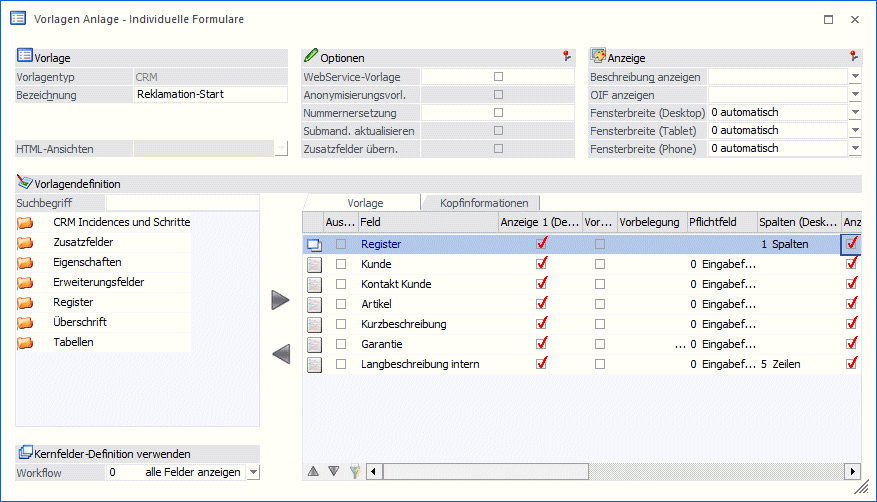
In der Vorlage ist die Eigenschaft "Garantie" enthalten.
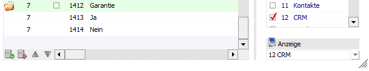
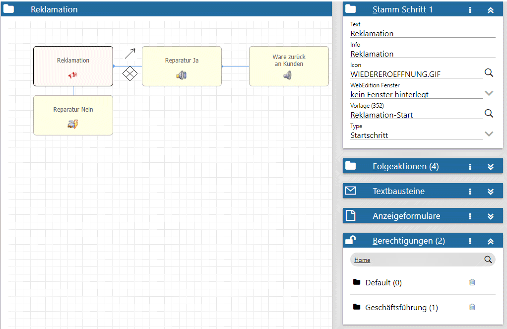
Die Fallrechte werden für den aktuellen Benutzer und die Gruppen 0 (Default) und 1 (Geschäftsführung) gesetzt und der Fall wird weitergeleitet an den aktuellen Benutzer.
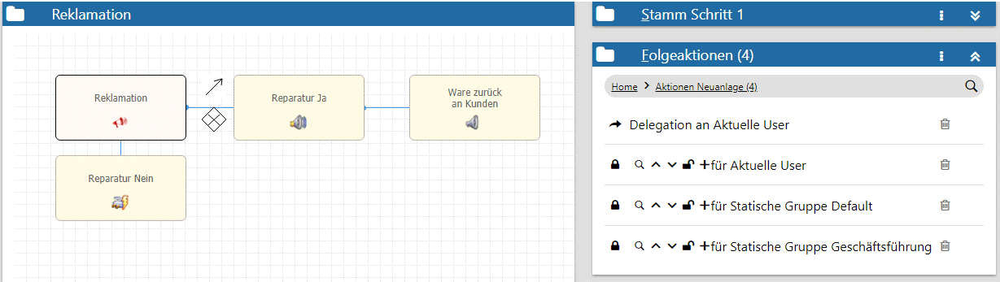
Bei dem Startpunkt wird die folgende Regel hinterlegt. Wichtig ist, dass der Startpunkt "Garantie" schon angelegt worden ist, da dieser bei der Regel hinterlegt wird.
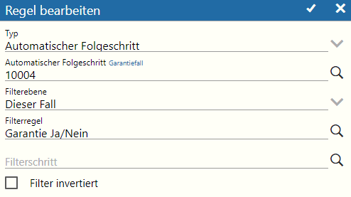
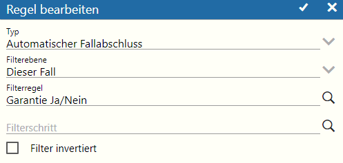
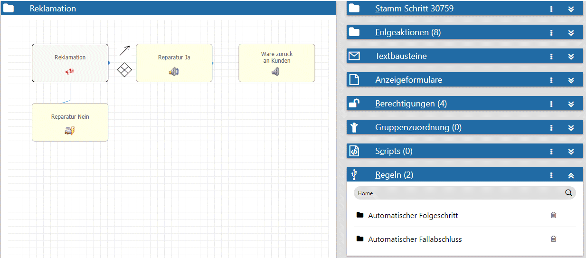
Die Definition des Filters sieht wie folgt aus:
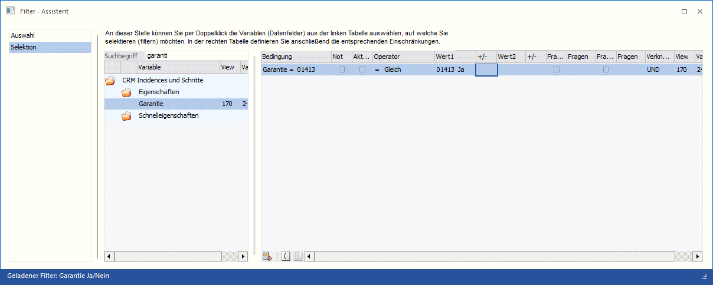
Bei den beiden Folgeschritten "Reparatur Ja" und "Reparatur Nein" werden die gleichen Berechtigung und Vorlage verwendet wo die Langebezeichnung intern für eine Notizeingabe erfolgt. Die Berechtigung wird für die Gruppe 0 (Default) und 1 (Geschäftsführung) vergeben.
Folgeschritt "Reparatur Ja" und Folgeschritt "Reparatur Nein".
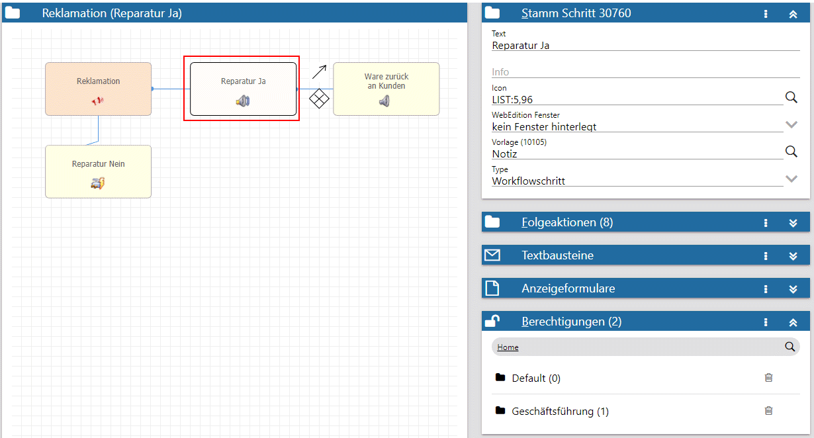
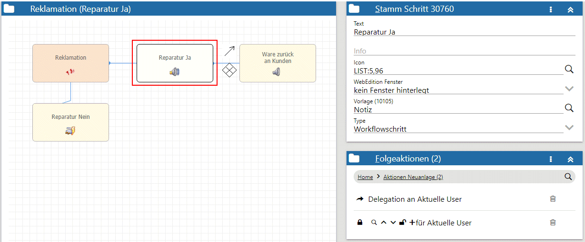
Folgeschritt "Ware zurück an Kunden"
In dem Folgeschritt wird die Notiz Vorlage aus den anderen Folgeschritten hinterlegt. Die Berechtigungen etc. sind alle identisch mit dem Folgeschritt "Reparatur Ja" oder "Reparatur Nein". Bei dem Schritt wird die Regel für den Fallabschluss hinterlegt.
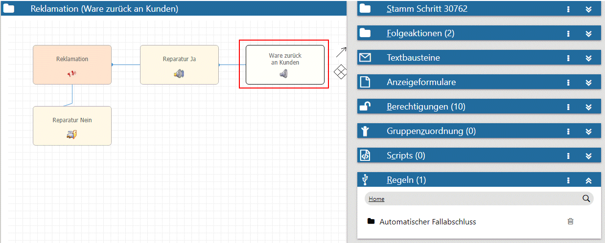
Ein Filter muss nicht verwendet werden.